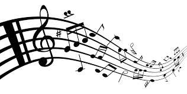

The Chorus is a non-denominational group of multi-talented
musicians domiciled in the city of Abuja, Nigeria.
Founded in January 2021, the group made her first performance in the city of Abuja, Nigeria
The group made her first public performance on the 28th of November, 2021
at the St. Mathias House ultramodern concert hall in Gudu, Abuja with
the performance of The Creation; an oratorio by Joseph Haydn which was
performed in a grand style.
The group is currently made of very professional and dynamic singers,
instrumentalists and musicians alike.
The Chorus seeks to be the foremost professional classical Choir of African origin.
With tenacious dedication and professionalism, The Chorus will constantly perform classical books, oratorios, operas and pieces by World class Composers. Furthermore, The Chorus will be a place of quality training of classical singers of high repute.
Music is beauty in itself, and making beautiful
music is serious business.
At The Chorus, we make music as
professonal as possible without eliminating its beauty and the
message that lies within. At the chorus we uphold a high standard
of professionalism using sheet music. We also teach music theory
to afford our member a high level of music appreciation
The Chorus understands how to blend several musical parts while integrating the four essential elements for a good performance which are: Tonal quality, harmony, rhythm and balance.

Our performances cut across all genres of
choral music, both foreign and indigenous,
across all musical eras.
Our diversity creates a binding force
both as individuals and in music.
We strive to give our best and produce
top notch performaces in a broad spectrum
of musical genres.
Every member is passion
driven, which helps in making us "stand out" amongst others.
You can be a part of us by simply downloading and filling the form below, and patiently wait for our feedback